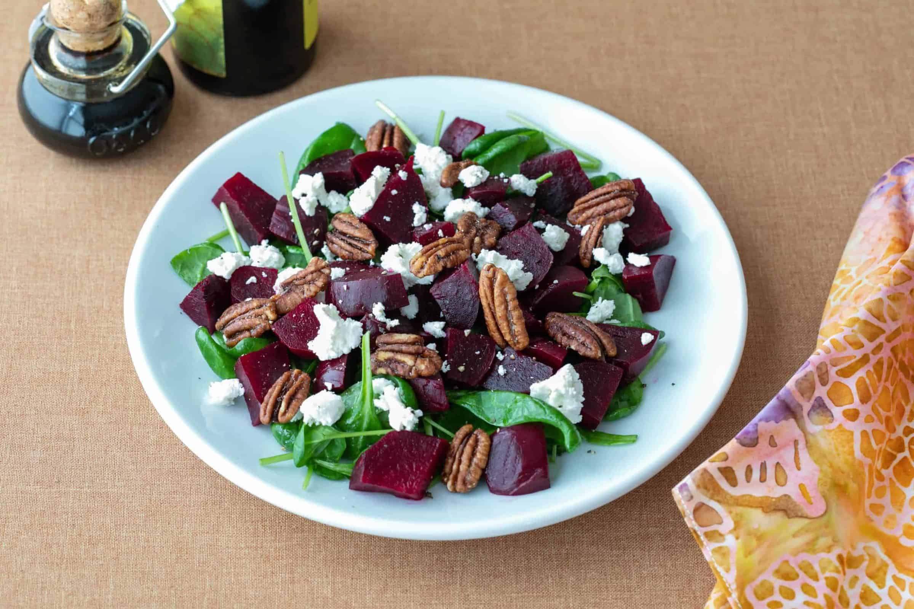

Goat cheese/beetroot salad
Goat cheese/beetroot salad

Ingredients
- Lettuce/ Any leafy salad base you like
- Beetroot (cut into slices)
- Goats Cheese (cut into slices)
- Walnuts (Crush up abit)
- Balsamic Dressing (you can also make your own if you know how lol)
Methods
- Put lettuce/ leafy salad on a plate
- Add beetroot and goats cheese on the top
- Sprinkle crushed walnuts on top
- Drizzle balsamic dressing over